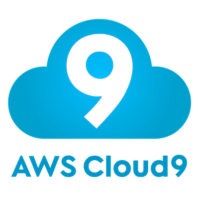

What is SaaS?
Software as a service, or SaaS, is a way of delivering centrally hosted
applications over the Internet—as a service. SaaS applications are sometimes
called web-based software, on-demand software, or hosted software. Whatever the name,
SaaS applications run on a SaaS provider’s servers.
Instead of installing and maintaining software, you simply access it via the Internet,
freeing yourself from complex software and hardware management. The provider manages
access to the application, including security, availability, and performance.
SaaS business applications are usually accessed by users using a thin client via a web browser.
Click below to visit Salesforce.

What is PaaS?
AWS Cloud9 is a cloud-based integrated development environment (IDE) that lets you write, run,
and debug your code with just a browser. It includes a code editor, debugger, and terminal.
Cloud9 comes pre-packaged with essential tools for popular programming languages including JavaScript,
Python, PHP, and more, so you don’t need to install files or configure your development machine to start
new projects. Since your Cloud9 IDE is cloud-based, you can work on your projects from your office, home,
or anywhere using an internet-connected machine. Cloud9 also provides a seamless experience for developing
serverless applications allowing you to easily define resources, debug, and switch between local and remote
execution of serverless applications. With Cloud9, you can quickly share your development environment with
your team, allowing you to pair program and track each other's inputs in real-time. Click below to visit Cloud9.

What is IaaS?
Infrastructure as a Service, sometimes abbreviated as IaaS, contains the basic building blocks for
cloud IT and typically provide access to networking features, computers (virtual or on dedicated hardware),
and data storage space. Infrastructure as a Service provides you with the highest level of flexibility and
management control over your IT resources and is most similar to existing IT resources that many IT
departments and developers are familiar with today. Click below to visit Amazon Web Services.

What is CaaS?
Communications as a Service (CaaS) is an outsourced enterprise communications solution that can be leased
from a single vendor. Such communications can include voice over IP (VoIP or Internet telephony),
instant messaging (IM), collaboration and videoconference applications using fixed and mobile devices.
CaaS has evolved along the same lines as Software as a Service (SaaS). CaaS allows businesses to selectively
deploy communications devices and modes on a pay-as-you-go, as-needed basis. This approach eliminates the
large capital investment and ongoing overhead for a system whose capacity may often exceed or fall short of current demand.
Click below to visit Gmail.